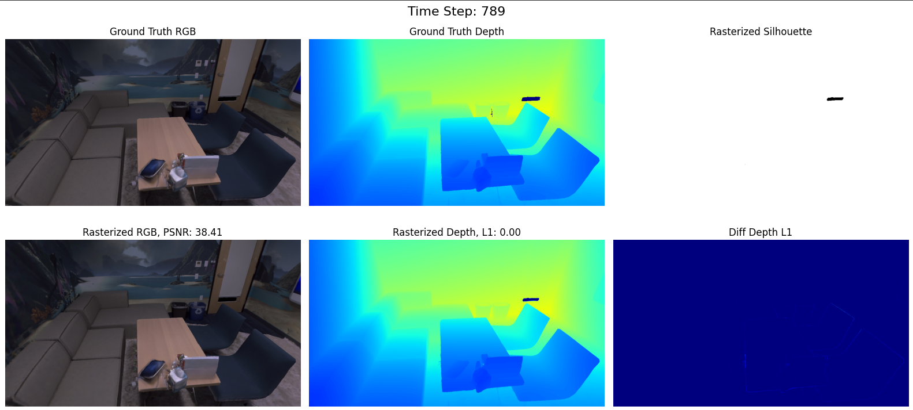

Overview
This project is an experiment harness around SplaTAM (Splat, Track & Map 3D Gaussians for Dense RGB-D SLAM, Keetha et al., CVPR 2024). We do not re-implement the method; instead we drive the upstream system on our own data to evaluate how well Gaussian-Splatting SLAM holds up on footage relevant to robot navigation.
The work has three parts:
- Baseline reproduction on the Replica dataset (
room0,office0) to validate our setup against published numbers. - A data pipeline that converts Intel RealSense ROS 2
.mcaprecordings into the NeRFCapture layout SplaTAM expects. - Evaluation of full RGB-D SLAM (tracking + mapping, no ground-truth poses) on four custom sequences.
The custom data forms a 2×2 matrix — two camera platforms (handheld vs. robot-mounted on a TurtleBot3 Burger) crossed with two scene topologies (a large open lab vs. a cluttered bounded desk) — captured on an Intel RealSense D455. This lets us ask which matters more for Gaussian-Splatting SLAM: how the camera moves, or what the scene looks like.
Pipeline
Footage is recorded on an Intel RealSense D455 (640×480 color + depth, 15 fps) as
ROS 2 .mcap bags. Our converter (mcap2dataset.py) turns a bag
into a SplaTAM-ready dataset:
- Read color + depth intrinsics from the
CameraInfotopics. - Undistort the color image.
- Reproject depth into the color frame (identity extrinsic, Z-min collision policy).
- Rescale depth to SplaTAM's fixed scale (
uint16 / 6553.5 = meters). - Time-sync RGB & depth within a 30 ms window.
- Write
rgb/,depth/, andtransforms.json(identity poses — SplaTAM estimates them).
┌──────────────────────────┐
│ Intel RealSense D455 │ handheld OR TurtleBot3-mounted
│ RGB-D @ 640x480, 15 fps │
└─────────────┬────────────┘
│ record in ROS 2
▼
┌──────────────────────────┐
│ .mcap bag file │ (RGB + depth + CameraInfo topics)
└─────────────┬────────────┘
│ mcap2dataset.py
▼
┌─────────────────────────────────────────────────────────────┐
│ undistort RGB → reproject depth into color frame │
│ rescale depth (÷ 6553.5) → time-sync RGB/depth (30 ms) │
└─────────────┬───────────────────────────────────────────────┘
▼
┌──────────────────────────┐
│ NeRFCapture dataset │ rgb/ depth/ transforms.json
│ (identity poses) │ → stage to local disk*
└─────────────┬────────────┘
│ zero-prior RGB-D SLAM
▼
┌──────────────────────────┐
│ SplaTAM │ joint camera tracking + 3D
│ track + map │ Gaussian mapping → params.npz
└─────────────┬────────────┘
▼
┌──────────────────────────┐
│ Evaluation │ PSNR · MS-SSIM · LPIPS ·
│ │ Depth-L1 · ATE
└──────────────────────────┘
* staging to the runtime's local disk avoids the Google Drive FUSE
I/O bottleneck that otherwise crashes long runs mid-sequence.
Results
Baseline sanity check — Replica
Before touching custom data we reproduced the Replica baseline. On room0 our
numbers match the paper closely, confirming the harness is faithful.
| Scene | PSNR ↑ | MS-SSIM ↑ | LPIPS ↓ | Depth RMSE ↓ | ATE RMSE ↓ |
|---|---|---|---|---|---|
room0 | 32.82 | 0.977 | 0.072 | 0.49 cm | — |
office0 | 38.71 | 0.984 | 0.082 | 0.37 cm | 0.46 cm |
Paper vs. ours on room0: PSNR 33.18 / 32.82 · SSIM 0.972 / 0.977 · LPIPS 0.074 / 0.072.
Limitations
Unbounded Gaussian growth (map bloat)
SplaTAM's map is its collection of 3D Gaussians, and it adds a new Gaussian at every pixel the current map doesn't already explain — wherever the rendered silhouette falls below 0.5, or the depth error is large. In a small bounded scene this saturates after the first few frames; in a large scene the camera keeps revealing new geometry (much of it beyond the D455's reliable depth range, so it is seeded at noisy positions), and the map never stops growing. Pruning doesn't keep pace with densification.
Our clearest evidence is the Replica office0 baseline. Our diagnostics show the map already holding ≈4.96M Gaussians at frame 800 and still climbing at ~1,000 Gaussians per frame to ≈5.40M by frame 1200 — with the saved checkpoint growing from 238 MB to 259 MB over the same span, and still rising through the end of the 2000-frame run.
Because every frame must rasterize and optimize the entire map, per-frame compute climbs as the map grows. Over the final stretch of the office0 run (frames 1200–1999) the cost averaged 3.74 s/frame tracking + 6.12 s/frame mapping (≈10 s per frame) — roughly 8× slower than the ~1.2 s/frame we measured on the small, bounded custom scenes.
This is a limitation the SplaTAM authors acknowledge, and it shows up directly in our own data: the open-lab sequences carry far heavier maps than the bounded-desk sequences, which is part of why the lab scenes degrade and slow down.
- No independent ground truth. The custom sequences have all-identity
poses in
transforms.jsonand no VIO prior, and the LiDAR/scantopic recorded zero messages (a subscription QoS timing issue). ATE for the handheld sequences is therefore not reported, and even the robot ATE values lack an external trajectory to validate against. - Sensor depth range. The RealSense D455 returns reliable depth only within ~0.5–3 m; open lab scenes exceed this, producing noisy depth and poor Gaussian initialization.
- Assumed depth↔color extrinsic. The bags carry no
/tf_static, so the converter assumes an identity depth-to-color transform (valid to ~15 mm for the D455, but still an approximation). - Capture instability. Recording at 1280×720 @ 30 fps overloaded the robot's Raspberry Pi and dropped frames; downsampling to 640×480 @ 15 fps fixed it, but some frames are still dropped across all sequences.
- Runtime fragility. Streaming the dataset off the Google Drive FUSE mount crashed runs (I/O rate-limiting); data had to be staged to the Colab runtime's local disk, and long runs depended on checkpoint resumes to survive disconnects.
- Zero-prior tracking only. Camera poses are estimated purely from dense RGB-D alignment with no odometry or motion prior, which is the main source of drift in large, low-texture spaces.
Custom sequences — full SLAM (zero-prior tracking)
The 2×2 matrix: platform (handheld / robot) × topology (open lab / bounded desk). Depth L1 is reported (matches the depth RMSE in the logs).
| Sequence | Platform / scene | Frames | PSNR ↑ | MS-SSIM ↑ | LPIPS ↓ | Depth L1 ↓ | ATE RMSE ↓ |
|---|---|---|---|---|---|---|---|
| seq1 | Handheld · lab | 873 | 20.43 | 0.812 | 0.220 | 15.48 cm | N/A — no GT |
| seq2 | Handheld · desk | 876 | 26.18 | 0.906 | 0.109 | 4.80 cm | N/A — no GT |
| seq3 | Robot · lab | 955 | 15.80 | 0.731 | 0.295 | 5.07 cm | 85.52 cm |
| seq4 | Robot · desk | 964 | 23.52 | 0.897 | 0.135 | 10.50 cm | 26.50 cm |
✓ Successful outcomes
The bounded desk scenes are where SplaTAM shines: seq2 (handheld desk) reaches PSNR 26.2 / SSIM 0.91, and seq4 (robot desk) gives the lowest trajectory error of the custom set (ATE 26.5 cm). Within the RealSense D455's reliable 0.5–3 m depth window, Gaussian seeding is clean and both tracking and mapping hold up.

✗ Failure cases
The open lab scenes are where it breaks down. seq3 (robot lab) has the
weakest reconstruction of the set (PSNR 15.8, LPIPS 0.30) and seq1 (handheld lab)
isn't far behind. The lab's open ranges exceed the D455's reliable depth window, so depth
returns get noisy, Gaussian initialization is poor, and trajectory drift follows. The
handheld sequences carry no ground-truth trajectory (all-identity poses, and the
LiDAR /scan topic recorded zero messages), so their ATE is not reported rather
than trusted.
Key findings
- Topology beats platform. Scene structure drives fidelity far more than how the camera is held — desk scenes beat lab scenes on nearly every metric regardless of platform, because the D455 only returns clean depth within ~0.5–3 m.
- A rigid mount still helps. Robot mounting noticeably reduces translational drift in hard scenes; the planar wheeled motion smooths out the sudden rotational spikes that plague handheld capture.
- Proximity anomaly on robot desk. seq4's depth L1 (10.5 cm) and ~56% depth validity were worse than expected — consistent with the platform sitting inside the camera's minimum-clipping distance or facing reflective table-top surfaces.
The pipeline also surfaced practical issues — depth maps average only ~59% valid pixels on raw bags, and runs repeatedly died on the Google Drive FUSE mount until data was staged to local disk, requiring checkpoint resumes.
Future Work
- Add real ground truth. Fix the LiDAR
/scanQoS so it records, or add a motion-capture / VIO reference, to evaluate ATE properly instead of marking it N/A. - Inject pose priors. Seed SplaTAM tracking with wheel odometry or VIO rather than zero-prior alignment, to cut drift in large open scenes.
- Depth-aware capture & filtering. Constrain capture to the D455's reliable range and add depth outlier filtering / confidence masking for open environments.
- Investigate the robot-desk anomaly. Pin down the proximity / reflective- surface cause behind seq4's degraded depth validity.
- Broaden the matrix. Capture more and longer sequences across the platform × topology grid, and run them in parallel on higher-VRAM hardware (e.g. A100).
- Close the navigation loop. Feed the reconstructed Gaussian map into a downstream planning / navigation stack — the original motivation for the project.
References
- N. Keetha et al., SplaTAM: Splat, Track & Map 3D Gaussians for Dense RGB-D SLAM, CVPR 2024 — code, PDF.
- Gaussian rasterizer: diff-gaussian-rasterization-w-depth.
- Replica dataset (baseline scenes).